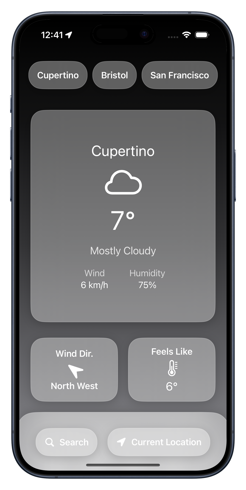
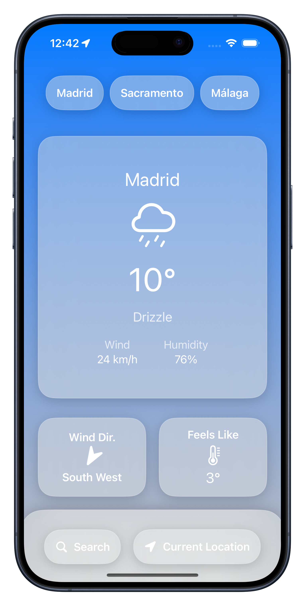
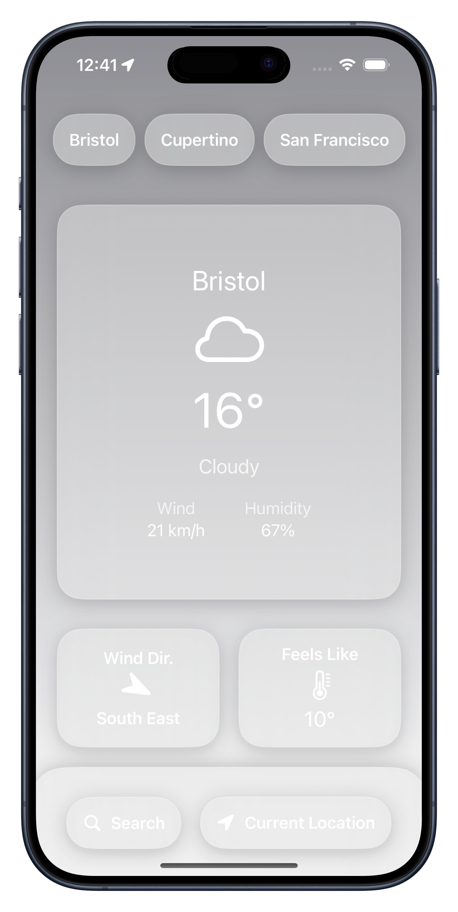
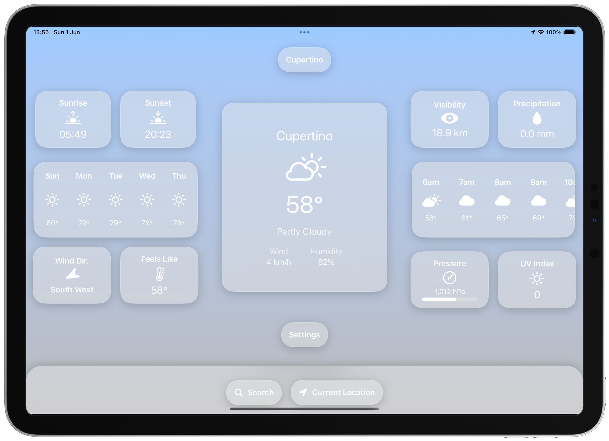
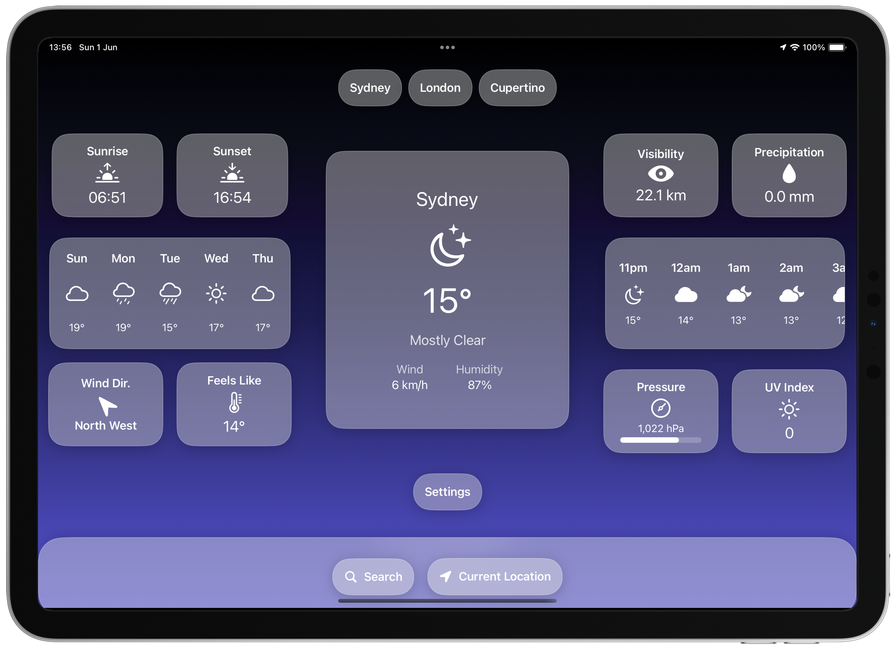
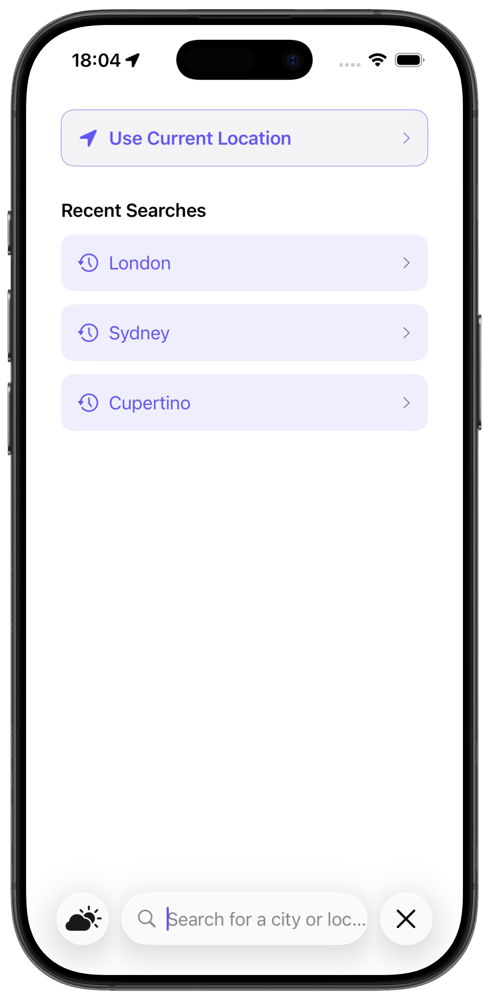
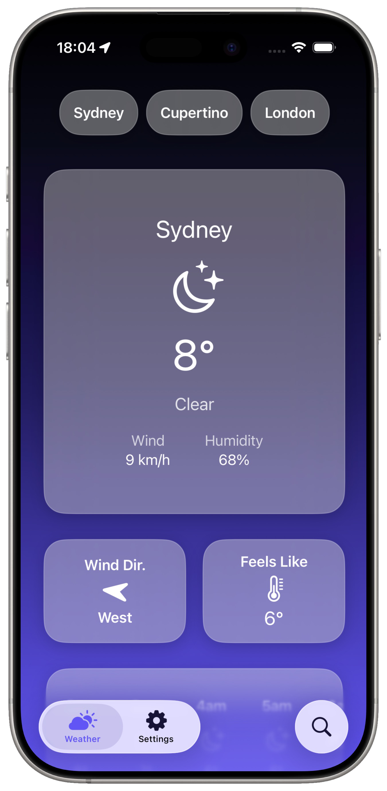
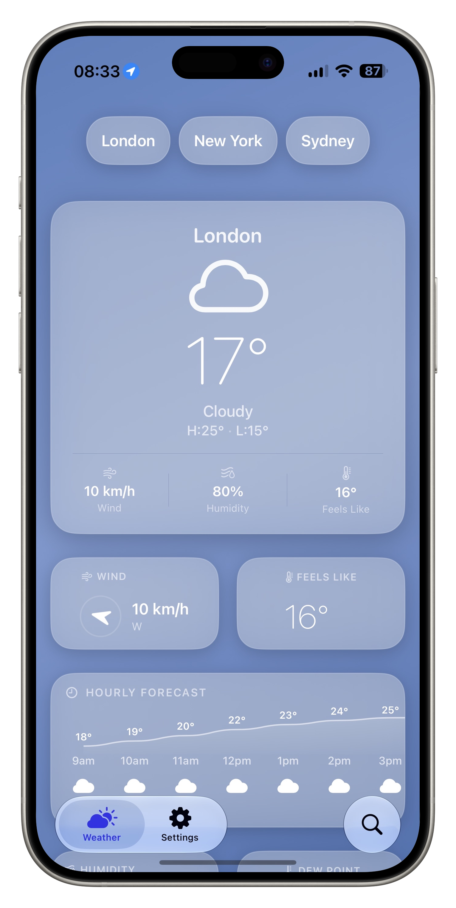
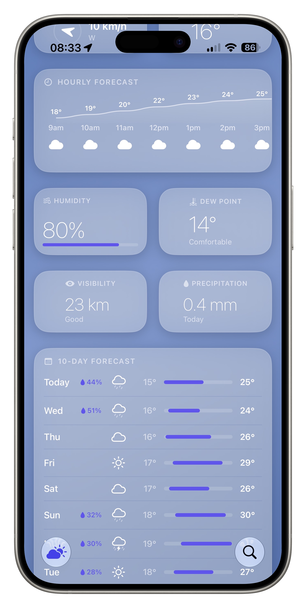
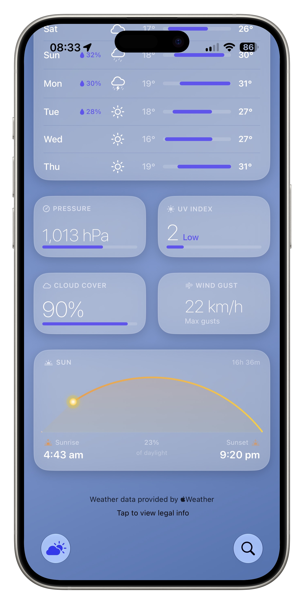

Cumulus
Evolving a SwiftUI Weather App Through Four Major Versions
Cumulus is a weather application built using SwiftUI and WeatherKit. Originally created as a learning project, it evolved over multiple years into a fully featured weather platform supporting iPhone, iPad, widgets, custom app icons, and a significantly expanded weather data experience.
The project demonstrates iterative product development, platform expansion, UI redesign, and long-term maintenance.
Initial Release
Goal
Create a simple weather application using SwiftUI and WeatherKit.
Features
- Current weather conditions
- Multi-city support
- Wind information
- Humidity information
- Dynamic backgrounds
- Light and dark mode support
Design
The initial design focused on simplicity. Large glassmorphic cards presented only the most important information: current temperature, conditions, wind, humidity, wind direction, and feels like temperature.
Challenges
As a first release, the focus was proving the technical concept rather than building a feature-rich product.
Key areas learned: SwiftUI layout system, WeatherKit integration, state management, and App Store deployment.



Personalisation Update
Goal
Allow users to customise the appearance of the application.
New Features
- Alternate app icons
- User customisation options
Why It Mattered
This update was small technically but important from a product perspective. Rather than only focusing on new functionality, it introduced personalisation and allowed users to make the app feel more their own.
Expanding to iPad
Goal
Bring the application to larger screens.
Major Addition
- Full iPad support
Design Changes
The original iPhone layout was completely rethought for tablet devices. New widgets included sunrise, sunset, visibility, precipitation, pressure, UV index, multi-day forecasts, and hourly forecasts.
Technical Challenges
Building for iPad required responsive SwiftUI layouts, adaptive sizing, flexible spacing systems, and support for multiple orientations.
Outcome: Cumulus evolved from a simple phone application into a cross-device weather platform.


Complete UI Overhaul
Goal
Modernise the entire user experience.
Why a Redesign Was Needed
While Version 2 was feature rich, the interface was becoming difficult to scale. Adding more weather information required a more flexible design system.
Major Changes
- New navigation structure
- Dedicated search experience
- Settings screen
- Improved weather views
- Better information hierarchy
- Redesigned visual language
Search Experience
A completely new search workflow was introduced with recent searches, current location shortcuts, and cleaner location management.
Design Evolution
Version 3 introduced stronger typography, better spacing, more consistent card design, and improved visual hierarchy.
This marked the transition from: "A weather app built by a developer" to "A weather product designed for users."



Refinement & Product Maturity
Goal
Polish every part of the experience.
Unlike Version 3, which focused on redesigning everything, Version 4 focused on refinement and depth.
New Features
- Detailed hourly forecasts
- 10-day forecast view
- Dew point tracking
- Cloud cover information
- Wind gust data
- Improved UV presentation
- Enhanced pressure visualisation
- Sunrise and sunset visualisation
- Richer weather analytics
Interface Improvements
- Improved spacing
- Better card organisation
- Enhanced readability
- More efficient information density
- Improved accessibility
- Cleaner navigation
App Icon Redesign
Version 4 introduced a completely redesigned icon. Compared with the original cloud logo, the new icon better reflects weather conditions, uses stronger visual depth, creates a more recognisable brand identity, and feels more aligned with modern iOS design.



About Cumulus Development
Cumulus began as a personal learning project to explore SwiftUI and WeatherKit, but grew into a comprehensive case study in iterative product development. Each version addressed specific user needs while maintaining technical quality and design consistency. The project demonstrates end-to-end ownership, from initial concept through multiple major releases, showcasing the ability to evolve a product based on user feedback and platform capabilities.
Results
Across four major versions, Cumulus evolved from a simple weather viewer into a comprehensive weather platform.
Technical
- SwiftUI
- WeatherKit
- WidgetKit
- Adaptive layouts
- State management
- App Store deployment
Product
- User-centred design
- Feature prioritisation
- Long-term maintenance
- Cross-device experiences
- Visual design systems
Business
- App Store publishing
- App branding
- User retention through iterative updates
- Product lifecycle management